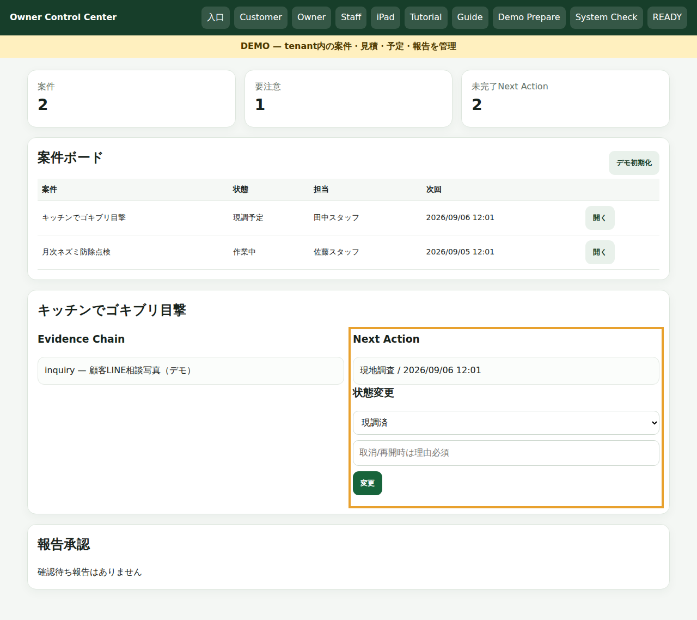
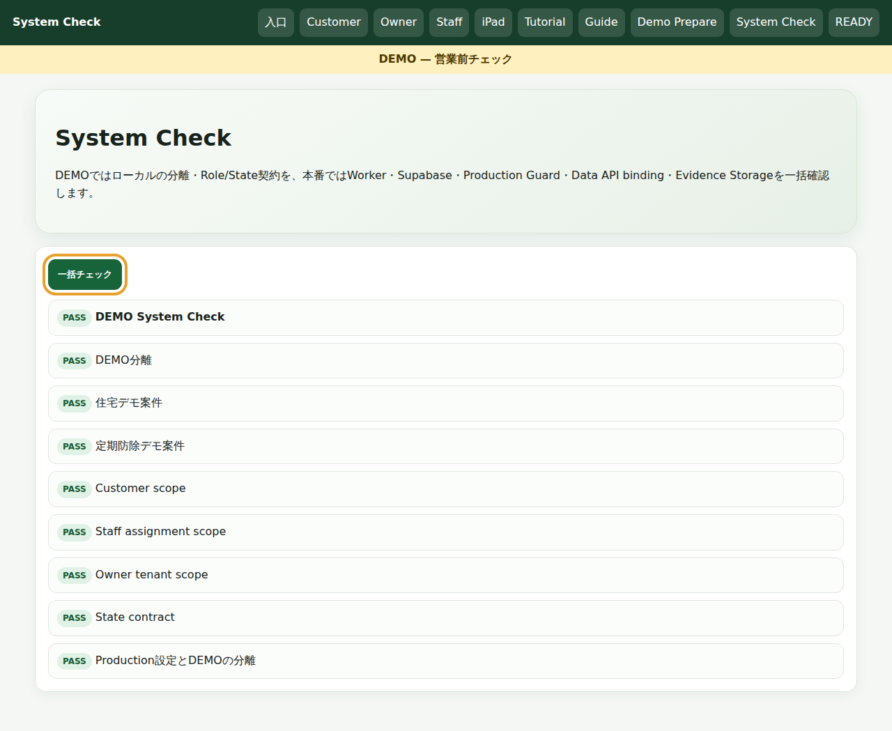
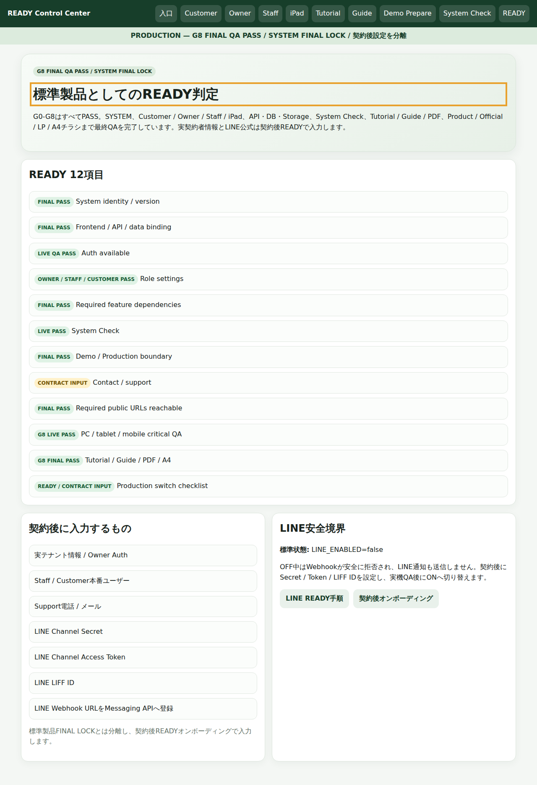

DPRO #54 環境衛生・ペストコントロール
Support V1.2.2
Detailed Manual V1.2.2 - 全体像
CENTRAL ACCEPT済みTutorial V1.2.2にSupport文書を同期。First10は正確に10STEPで、current real screenを表示専用iframeへ読み込みます。

10 STEP exactlyread-only iframebusiness mutation 0
DPRO #54 環境衛生・ペストコントロール
Support V1.2.2
STEP 01-03: Guide / Demo Prepare / WEB相談
01 Guide / Safetyguide-center.html。操作方法と安全境界。
02 Demo Preparedemo-prepare.html?demo=1 / #prepare。位置確認のみ。
03 WEB相談inquiry.html?demo=1 / #form。送信/アップロードを実行しない。
禁止操作
TutorialはDemo Prepareを自動クリックせず、相談フォームを送信しません。
DPRO #54 環境衛生・ペストコントロール
Support V1.2.2
STEP 04-06: Customer / Owner
04 Customercustomer.html?demo=1 / #detail > h2。追記/再訪/見積回答を実行しない。
05 Owner 案件ボードowner.html?demo=1 / .open。
06 Owner Next Action#detail .grid > div:nth-child(2)。担当/予定/見積/状態変更なし。

Customer / Owner business mutation = 0
Tutorialから業務データの作成・更新・承認・削除を行いません。
DPRO #54 環境衛生・ペストコントロール
Support V1.2.2
STEP 07: Staff 現場カルテ
staff.html?demo=1 の #phase をrequired targetとして確認。Evidence Chain、現調、施工、薬剤、安全確認、報告の入力領域を現在画面上で強調します。

実行しない
保存、施工記録更新、薬剤記録更新、報告確定など。
DPRO #54 環境衛生・ペストコントロール
Support V1.2.2
STEP 08: Field Map / Trap PIN
owner-ipad.html?demo=1 の #app > section.card h2 を確認。図面、Zone、Trap、PINの概念と配置領域だけを見ます。

保存禁止
Tutorialから図面・Zone・Trap・PINの追加、移動、保存を行いません。Field Mapのbusiness mutationは0です。
DPRO #54 環境衛生・ペストコントロール
Support V1.2.2
STEP 09: System Check
system-check.html?demo=1 の #run を確認。営業前のProduction境界、API、Storage、Field Map契約などのチェック入口です。

禁止
Demo reset / Demo Prepareなど、業務状態を変更する初期化操作。
DPRO #54 環境衛生・ペストコントロール
Support V1.2.2
STEP 10: READY / 契約後設定
ready-control-center.html の .hero h1 を確認。標準製品の完成状態と、契約後に行う実テナント・Owner Auth・Staff/Customer本番ユーザー・Support連絡先・LINE資格情報を分離します。

重要
Tutorialは契約後設定を実行しません。READYの場所と境界を説明するだけです。
DPRO #54 環境衛生・ペストコントロール
Support V1.2.2
TARGET_MISSING / Retry / Guide
Tutorialはcurrent routeを読み込み、exact selectorを有限時間待ち、targetへscrollしてvisible highlightを付与します。required targetが見つからない場合はTARGET_MISSINGです。

route load->selector wait->scroll / highlight->Next enabled
Missing時はblocking
Nextは有効になりません。Retryで同じtargetを再確認するか、Guide Centerで入口・役割・System Checkを確認。Skipなし、required bypass 0。
DPRO #54 環境衛生・ペストコントロール
Support V1.2.2
Support運用チェックリスト
開始前
- Guideで役割を選ぶ
- Start/Resume/Replayを使い分ける
- 公開DEMOへ実個人情報を入力しない
Tutorial中
- current real screenとhighlightを確認
- required targetがmissingならRetry/Guide
- 保存/送信/初期化を行わない
営業前
- System Checkを確認
- Demo resetをしない
- READY境界を確認
固定仕様
- First10 exactly 10
- Skipなし
- required bypass 0
- business mutation 0
Detailed: A4縦 10ページRendered QR QA: requiredGuide 390/768/1440